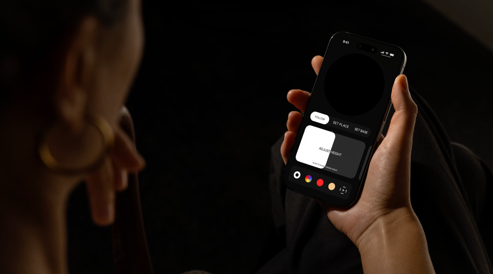
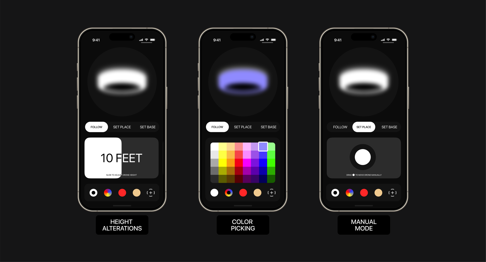
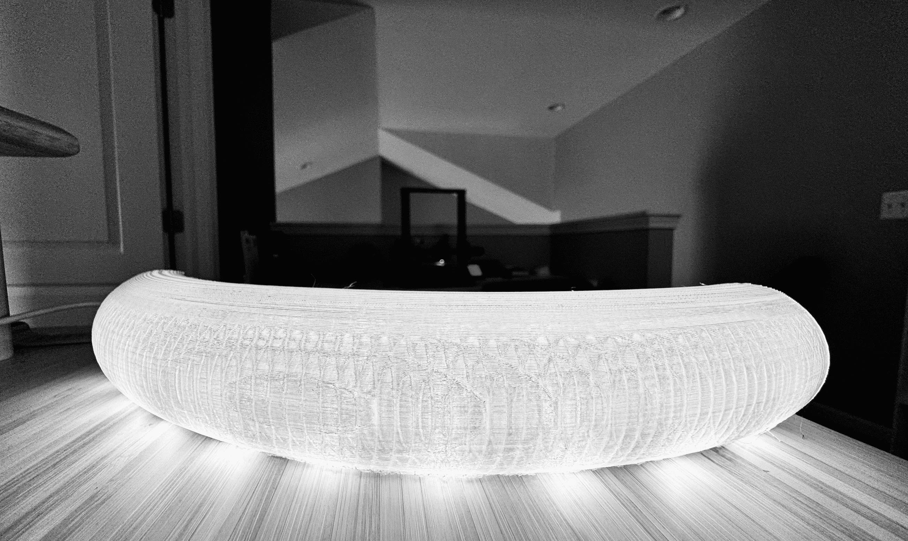
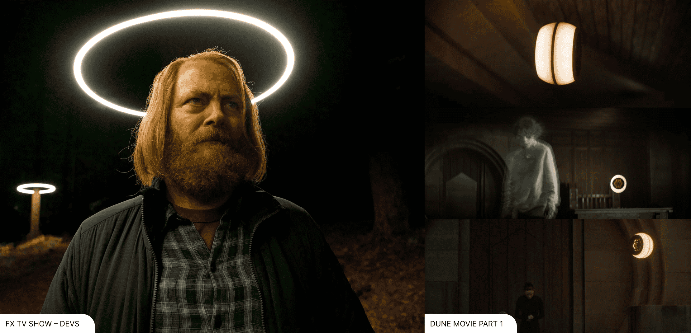

For the deaf and hard-of-hearing community, light is a prerequisite for language. We communicate
with our both hands with diverse range of motions. During night time we depends light source to
commuicate.
Holding a smartphone to illuminate one’s face is ergonomically taxing,
creates harsh, illegible shadows, and occupies one of the two hands required for Sign Language.
The Vision:
To develop a hands-free, silent, and self-stabilizing light source that follows the user, providing
consistent 360-degree illumination for visual communication.
The Evolution:
The project originated from a mechanical monocopter study utilizing a single-blade propulsion
system.
However, physical prototyping revealed that traditional high-torque motors and high-current
(30A+) electronic speed controllers (ESCs) produced prohibitive acoustic noise and thermal
instability.
Halo Lights Concept into Reality
With Rive, motion design, AI, and ASL linguistics in the pipeline, Duolingo has the foundation for a
new accessibility-driven character system. This proof of concept explores how that future could work
at scale.



Figuring Out What’s Best for the Project
Challenge:
The primary challenge in developing the Halo was balancing high-output illumination with the weight
and power constraints of aerial propulsion. While my initial physical prototypes utilized
drone-based mechanical propulsion, this phase was critical for identifying key user-safety and
acoustic constraints.
Moving forward, I am pivoting the architecture toward Solid-State Ionic Propulsion and Hubless
Magnetic Drives. These methods offer the silent, friction-free operation necessary for a
high-empathy communication tool. This evolution reflects a commitment to the Biodesign process:
moving beyond 'available' tech to invent solutions that are truly bio-compatible and safe for
close-proximity human interaction.
Solution
Instead of getting stuck on impossible physics right now, I focused on the UX and the system. I
built a tangible model grounded in current drone tech to prove the movement and the lighting angles.
This allowed me to nail down the spatial clarity and the mobile app experience while keeping the
more advanced propulsion as the next step for research.

Designed for Real-World Use Cases
Deaf & HoH Communication
Assistive halo lighting that enhances face and hand visibility for sign language
communication in low-light environments.
Mobility & Navigation Support
Assistive lighting that improves navigation and spatial awareness in low-light environments,
such as dark hallways or nighttime routines.
Adaptive Lighting Environments
Deployable lighting that brings visibility to spaces without permanent electrical
infrastructure, reducing reliance on fixed fixtures.
First Responder Support
High-visibility, deployable lighting to help navigate low-light, smoke-filled, or obstructed
environments.
Power-Outage Scenarios
Portable lighting that provides visibility and guidance during power outages or emergency
situations.
Reflections
Growth Opportunities
Working With Reality vs. Imagination
This project began with speculative inspiration, but progress only came from grounding
those ideas in real-world constraints. Designing within technological limits ultimately
strengthened the concept and clarified its purpose.
Designing for Accessibility
The idea originated from identifying everyday accessibility needs that are often
overlooked. Designing for these gaps demonstrates how accessibility can drive
meaningful, usable products—not just meet compliance standards.